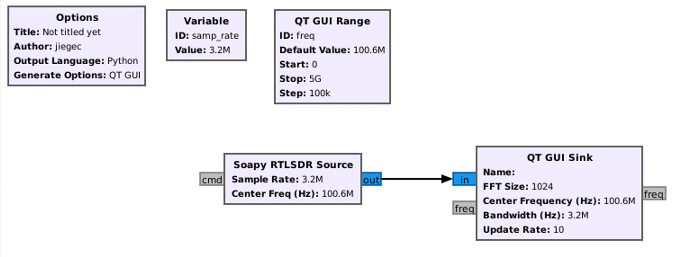
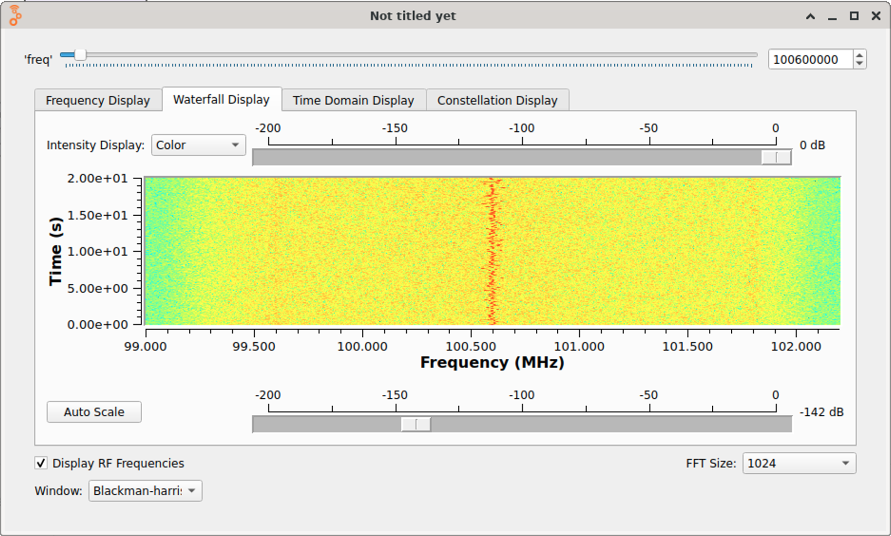
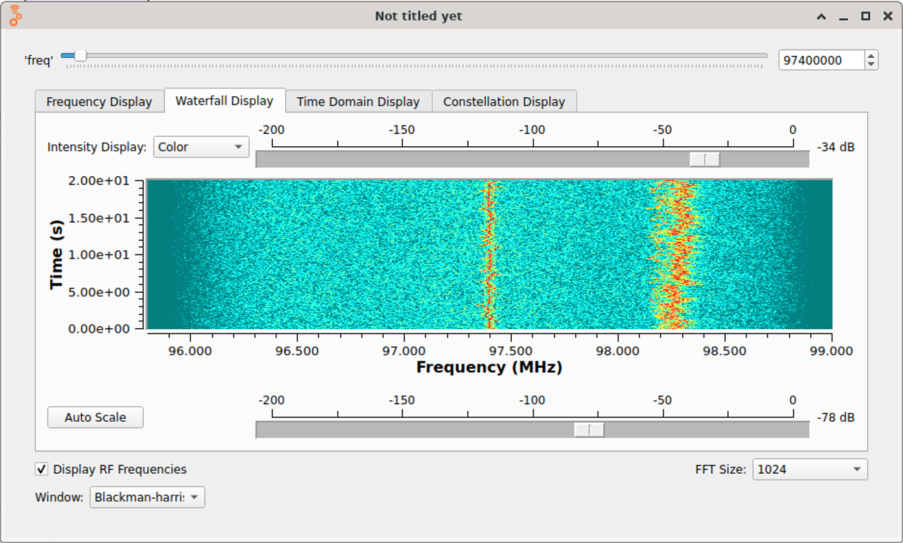
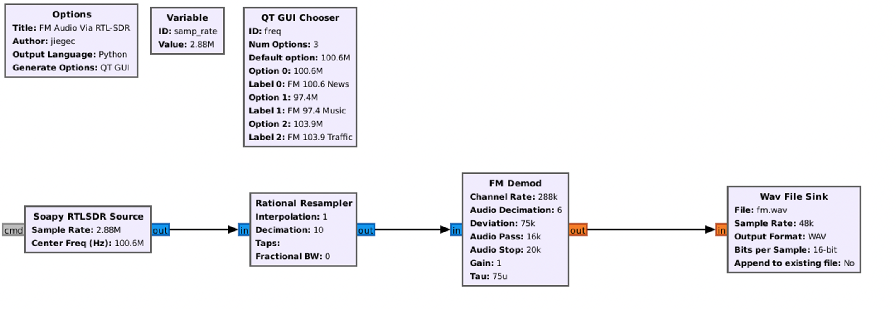

在 GNURadio Companion 中收听 FM 广播¶
背景¶
以前买过 RTL-SDR，用 Gqrx 做过收音机，当时还给 Homebrew 尝试提交过几个 sdr 相关的 pr，但是限于知识的缺乏，后来就没有再继续尝试了。
前两天，@OceanS2000 讲了一次 Tunight: 高级收音机使用入门，又勾起了我的兴趣，所以我来尝试一下在 GNURadio Companion 中收听 FM 广播电台。
我没有上过无线电相关课程，所以下面有一些内容可能不正确或者不准确。
安装¶
我的实验环境是 NixOS，所以是用下面的配置来安装 gnuradio 的：
# SDR
# https://github.com/NixOS/nixpkgs/pull/170253
(gnuradio.override { extraMakeWrapperArgs = [ "--prefix" "SOAPY_SDR_PLUGIN_PATH" ":" (soapyrtlsdr + "/lib/SoapySDR/modules0.8/") ]; })
soapysdr-with-plugins
其中 gnuradio 的 override 是为了让它可以找到 soapyrtlsdr 的库，否则它会找不到设备；soapysdr-with-plugins 是为了提供 SoapySDRUtil 命令，来确认它可以找到 RTL-SDR 设备：
$ SoapySDRUtil --probe
----------------------------------------------------
-- Device identification
----------------------------------------------------
driver=RTLSDR
hardware=R820T
origin=https://github.com/pothosware/SoapyRTLSDR
rtl=0
----------------------------------------------------
-- Peripheral summary
----------------------------------------------------
Channels: 1 Rx, 0 Tx
Timestamps: NO
Other Settings:
* Direct Sampling - RTL-SDR Direct Sampling Mode
[key=direct_samp, default=0, type=string, options=(0, 1, 2)]
* Offset Tune - RTL-SDR Offset Tuning Mode
[key=offset_tune, default=false, type=bool]
* I/Q Swap - RTL-SDR I/Q Swap Mode
[key=iq_swap, default=false, type=bool]
* Digital AGC - RTL-SDR digital AGC Mode
[key=digital_agc, default=false, type=bool]
----------------------------------------------------
-- RX Channel 0
----------------------------------------------------
Full-duplex: NO
Supports AGC: YES
Stream formats: CS8, CS16, CF32
Native format: CS8 [full-scale=128]
Stream args:
* Buffer Size - Number of bytes per buffer, multiples of 512 only.
[key=bufflen, units=bytes, default=262144, type=int]
* Ring buffers - Number of buffers in the ring.
[key=buffers, units=buffers, default=15, type=int]
* Async buffers - Number of async usb buffers (advanced).
[key=asyncBuffs, units=buffers, default=0, type=int]
Antennas: RX
Full gain range: [0, 49.6] dB
TUNER gain range: [0, 49.6] dB
Full freq range: [23.999, 1764] MHz
RF freq range: [24, 1764] MHz
CORR freq range: [-0.001, 0.001] MHz
Sample rates: 0.25, 1.024, 1.536, 1.792, 1.92, 2.048, 2.16, 2.56, 2.88, 3.2 MSps
寻找 FM 广播¶
接着，就可以在 GRC(GNURadio Companion) 中从 RTL-SDR 读取数据了。首先，我按照 Guided Tutorial Hardware Considerations 的方法进行分析，可以看到哪些频率上有信号：

图中的参数：
- Sample Rate: 3.2MHz，这里要取比较大，如果太小可能找不到信号

可以看到在 100.6MHz 附近有比较明显的信号，查询了一下，这对应了北京新闻广播 FM100.6，确实是一个 FM 广播电台。通过修改中心频率，还可以找到附近的 FM97.4 音乐广播和 FM 103.9 交通广播。

收听 FM 广播¶
找到频率以后，就可以进行 FM 解调了。我继续按照 FM Demod 的方法进行搭建，由于我用的是 RTL-SDR，考虑到它支持的采样率，我选取了 2.88MHz 采样率，经过一个 1/10 的 Rational Resampler 变成 288KHz 采样率，再进行 FM 解调，最后得到 288KHz / 6 = 48KHz 的音频，然后保存在 WAV 文件中：

图中的参数：
- Sample Rate: 2.88MHz，这里取了 48KHz 的整数倍数
- Rational Resampler - Decimation: FM Demod 的 Decimation 不能太大，所以这里先进行 10 倍降采样，把采样率从 2.88MHz 降到 288KHz
- FM Demod - Channel Rate: 输入的采样率是 288KHz
- FM Demod - Audio Decimation: 6 倍降采样，这样输出就是 48KHz
- FM Demod - Deviation: 75KHz，维基百科：
The maximum frequency deviation of the carrier is usually specified and regulated by the licensing authorities in each country. For a stereo broadcast, the maximum permitted carrier deviation is invariably ±75 kHz, although a little higher is permitted in the United States when SCA systems are used. For a monophonic broadcast, again the most common permitted maximum deviation is ±75 kHz. However, some countries specify a lower value for monophonic broadcasts, such as ±50 kHz.[5] - FM Demod - Audio Pass/Audio Stop: 低通滤波器参数，保留 0-16 KHz 的频率（Passband），到 20KHz 截止（Stopband）
运行一段时间，收听保存下来的 wav 文件，发现可以清晰地听到广播电台的声音。
把输出改成 Audio Sink(Sample Rate = 48KHz)，然后就可以当成收音机应用来跑了：